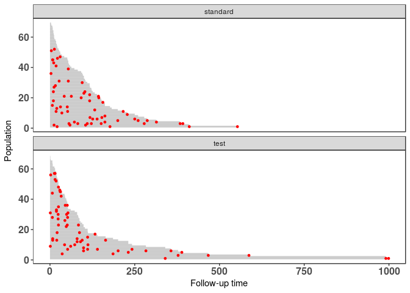
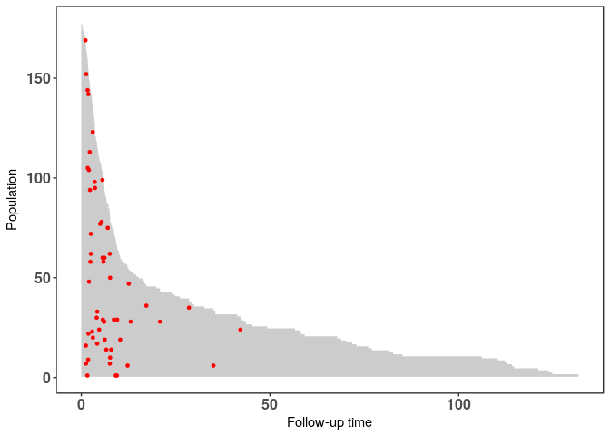
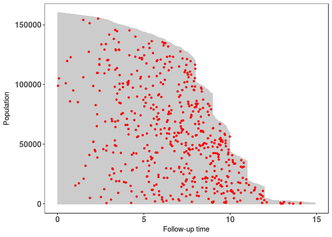
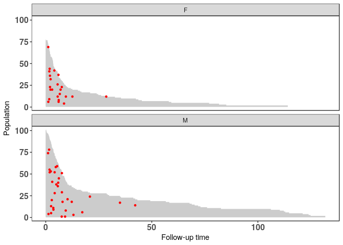
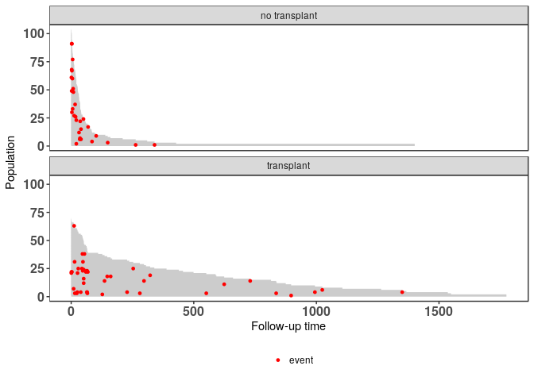
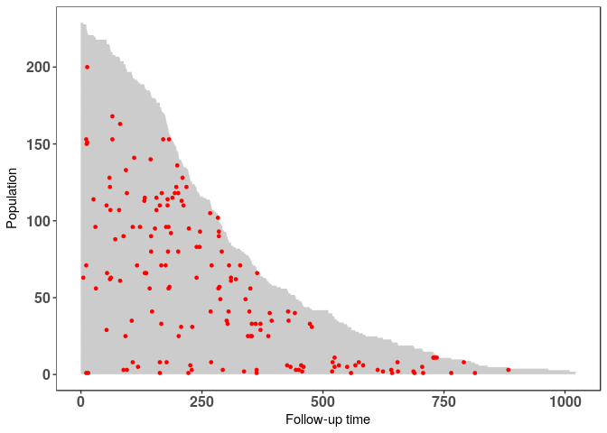
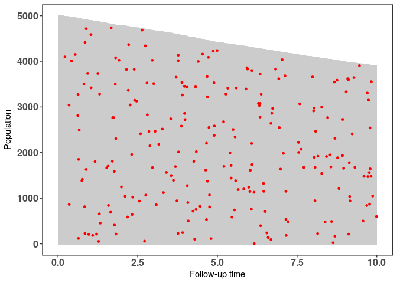

Population Time Plots
Load Required Packages¶
library(knitr) library(data.table) library(magrittr) library(ggplot2) library(survival) library(casebase)
Veteran Data¶
# veteran data in library(survival) data("veteran") str(veteran)
## 'data.frame': 137 obs. of 8 variables: ## $ trt : num 1 1 1 1 1 1 1 1 1 1 ... ## $ celltype: Factor w/ 4 levels "squamous","smallcell",..: 1 1 1 1 1 1 1 1 1 1 ... ## $ time : num 72 411 228 126 118 10 82 110 314 100 ... ## $ status : num 1 1 1 1 1 1 1 1 1 0 ... ## $ karno : num 60 70 60 60 70 20 40 80 50 70 ... ## $ diagtime: num 7 5 3 9 11 5 10 29 18 6 ... ## $ age : num 69 64 38 63 65 49 69 68 43 70 ... ## $ prior : num 0 10 0 10 10 0 10 0 0 0 ...
# create 'popTime' object popTimeData <- popTime(data = veteran)
## 'time' will be used as the time variable ## 'status' will be used as the event variable ## Sampling from all remaining individuals under study, ## regardless of event status
# object of class 'popTime' class(popTimeData)
## [1] "popTime" "data.table" "data.frame"
# plot method for objects of class 'popTime' plot(popTimeData)

Stratified by treatment population time plot¶
# stratified by treatment population time plot veteran <- transform(veteran, trt = factor(trt, levels = 1:2, labels = c("standard", "test"))) # create 'popTimeExposure' object popTimeData <- popTime(data = veteran, exposure = "trt")
## 'time' will be used as the time variable ## 'status' will be used as the event variable ## Sampling from all remaining individuals under study, ## regardless of event status ## Sampling from all remaining individuals under study, ## regardless of event status
# object of class 'popTimeExposure' class(popTimeData)
## [1] "popTimeExposure" "list"
# plot method for objects of class 'popTimeExposure' plot(popTimeData)

Stem Cell Data¶
bmt <- read.csv("https://raw.githubusercontent.com/sahirbhatnagar/casebase/master/inst/extdata/bmtcrr.csv") str(bmt)
## 'data.frame': 177 obs. of 7 variables: ## $ Sex : Factor w/ 2 levels "F","M": 2 1 2 1 1 2 2 1 2 1 ... ## $ D : Factor w/ 2 levels "ALL","AML": 1 2 1 1 1 1 1 1 1 1 ... ## $ Phase : Factor w/ 4 levels "CR1","CR2","CR3",..: 4 2 3 2 2 4 1 1 1 4 ... ## $ Age : int 48 23 7 26 36 17 7 17 26 8 ... ## $ Status: int 2 1 0 2 2 2 0 2 0 1 ... ## $ Source: Factor w/ 2 levels "BM+PB","PB": 1 1 1 1 1 1 1 1 1 1 ... ## $ ftime : num 0.67 9.5 131.77 24.03 1.47 ...
# create 'popTime' object popTimeData <- popTime(data = bmt, time = "ftime")
## 'Status' will be used as the event variable ## Sampling from all remaining individuals under study, ## regardless of event status
# object of class 'popTime' class(popTimeData)
## [1] "popTime" "data.table" "data.frame"
# plot method for objects of class 'popTime' plot(popTimeData)

Stratified by Disease¶
# stratified by Disease population time plot # Disease (lymphoblastic or myeloblastic leukemia, # abbreviated as ALL and AML, respectively) # create 'popTimeExposure' object popTimeData <- popTime(data = bmt, time = "ftime", exposure = "D")
## 'Status' will be used as the event variable ## Sampling from all remaining individuals under study, ## regardless of event status ## Sampling from all remaining individuals under study, ## regardless of event status
# object of class 'popTimeExposure' class(popTimeData)
## [1] "popTimeExposure" "list"
# plot method for objects of class 'popTimeExposure' plot(popTimeData)

# stratify by gender popTimeData <- popTime(data = bmt, time = "ftime", exposure = "Sex")
## 'Status' will be used as the event variable ## Sampling from all remaining individuals under study, ## regardless of event status ## Sampling from all remaining individuals under study, ## regardless of event status
plot(popTimeData)

Stanford Heart Transplant Data¶
# data from library(survival) data("heart") str(heart)
## 'data.frame': 172 obs. of 8 variables: ## $ start : num 0 0 0 1 0 36 0 0 0 51 ... ## $ stop : num 50 6 1 16 36 39 18 3 51 675 ... ## $ event : num 1 1 0 1 0 1 1 1 0 1 ... ## $ age : num -17.16 3.84 6.3 6.3 -7.74 ... ## $ year : num 0.123 0.255 0.266 0.266 0.49 ... ## $ surgery : num 0 0 0 0 0 0 0 0 0 0 ... ## $ transplant: Factor w/ 2 levels "0","1": 1 1 1 2 1 2 1 1 1 2 ... ## $ id : num 1 2 3 3 4 4 5 6 7 7 ...
# create time variable for time in study heart <- transform(heart, time = stop - start, transplant = factor(transplant, labels = c("no transplant", "transplant"))) # stratify by transplant indicator popTimeData <- popTime(data = heart, exposure = "transplant")
## 'time' will be used as the time variable ## 'event' will be used as the event variable ## Sampling from all remaining individuals under study, ## regardless of event status ## Sampling only from individuals who never experienced ## the event of interest
# can specify a legend plot(popTimeData, legend = TRUE)

NCCTG Lung Cancer Data¶
# data from library(survival) data("cancer") str(cancer)
## 'data.frame': 228 obs. of 10 variables: ## $ inst : num 3 3 3 5 1 12 7 11 1 7 ... ## $ time : num 306 455 1010 210 883 ... ## $ status : num 2 2 1 2 2 1 2 2 2 2 ... ## $ age : num 74 68 56 57 60 74 68 71 53 61 ... ## $ sex : num 1 1 1 1 1 1 2 2 1 1 ... ## $ ph.ecog : num 1 0 0 1 0 1 2 2 1 2 ... ## $ ph.karno : num 90 90 90 90 100 50 70 60 70 70 ... ## $ pat.karno: num 100 90 90 60 90 80 60 80 80 70 ... ## $ meal.cal : num 1175 1225 NA 1150 NA ... ## $ wt.loss : num NA 15 15 11 0 0 10 1 16 34 ...
# since the event indicator 'status' is numeric, it must have # 0 for censored and 1 for event cancer <- transform(cancer, status = status - 1, sex = factor(sex, levels = 1:2, labels = c("Male", "Female"))) # population time plot # redistributing the red points among those who never experienced an event # because there are enough available at each time point popTimeData <- popTime(data = cancer)
## 'time' will be used as the time variable ## 'status' will be used as the event variable ## Sampling only from individuals who never experienced ## the event of interest
plot(popTimeData)

Stratified by gender¶
popTimeData <- popTime(data = cancer, exposure = "sex")
## 'time' will be used as the time variable ## 'status' will be used as the event variable ## Sampling only from individuals who never experienced ## the event of interest ## Sampling from all remaining individuals under study, ## regardless of event status
# can change the plot aesthetics plot(popTimeData, line.width = 0.2, line.colour = "black", point.size = 1, point.colour = "cyan")

Simulated Data Example¶
Simulate the data¶
set.seed(1) nobs <- 5000 # simulation parameters a1 <- 1.0 b1 <- 200 a2 <- 1.0 b2 <- 50 c1 <- 0.0 c2 <- 0.0 # end of study time eost <- 10 # e event type 0-censored, 1-event of interest, 2-competing event # t observed time/endpoint # z is a binary covariate DTsim <- data.table(ID = seq_len(nobs), z=rbinom(nobs, 1, 0.5)) setkey(DTsim, ID) DTsim[,`:=` (event_time = rweibull(nobs, a1, b1 * exp(z * c1)^(-1/a1)), competing_time = rweibull(nobs, a2, b2 * exp(z * c2)^(-1/a2)), end_of_study_time = eost)]
## ID z event_time competing_time end_of_study_time ## 1: 1 0 667.64719 136.890050 10 ## 2: 2 0 206.73147 19.532835 10 ## 3: 3 1 278.16256 15.368960 10 ## 4: 4 1 25.75304 109.776451 10 ## 5: 5 0 229.15406 153.249168 10 ## --- ## 4996: 4996 0 62.37659 136.007260 10 ## 4997: 4997 0 139.18781 21.246797 10 ## 4998: 4998 0 137.28346 3.674155 10 ## 4999: 4999 0 113.08585 7.509247 10 ## 5000: 5000 0 85.33457 11.294627 10
DTsim[,`:=`(event = 1 * (event_time < competing_time) + 2 * (event_time >= competing_time), time = pmin(event_time, competing_time))]
## ID z event_time competing_time end_of_study_time event time ## 1: 1 0 667.64719 136.890050 10 2 136.890050 ## 2: 2 0 206.73147 19.532835 10 2 19.532835 ## 3: 3 1 278.16256 15.368960 10 2 15.368960 ## 4: 4 1 25.75304 109.776451 10 1 25.753040 ## 5: 5 0 229.15406 153.249168 10 2 153.249168 ## --- ## 4996: 4996 0 62.37659 136.007260 10 1 62.376591 ## 4997: 4997 0 139.18781 21.246797 10 2 21.246797 ## 4998: 4998 0 137.28346 3.674155 10 2 3.674155 ## 4999: 4999 0 113.08585 7.509247 10 2 7.509247 ## 5000: 5000 0 85.33457 11.294627 10 2 11.294627
DTsim[time >= end_of_study_time, event := 0]
## ID z event_time competing_time end_of_study_time event time ## 1: 1 0 667.64719 136.890050 10 0 136.890050 ## 2: 2 0 206.73147 19.532835 10 0 19.532835 ## 3: 3 1 278.16256 15.368960 10 0 15.368960 ## 4: 4 1 25.75304 109.776451 10 0 25.753040 ## 5: 5 0 229.15406 153.249168 10 0 153.249168 ## --- ## 4996: 4996 0 62.37659 136.007260 10 0 62.376591 ## 4997: 4997 0 139.18781 21.246797 10 0 21.246797 ## 4998: 4998 0 137.28346 3.674155 10 2 3.674155 ## 4999: 4999 0 113.08585 7.509247 10 2 7.509247 ## 5000: 5000 0 85.33457 11.294627 10 0 11.294627
DTsim[time >= end_of_study_time, time:=end_of_study_time]
## ID z event_time competing_time end_of_study_time event time ## 1: 1 0 667.64719 136.890050 10 0 10.000000 ## 2: 2 0 206.73147 19.532835 10 0 10.000000 ## 3: 3 1 278.16256 15.368960 10 0 10.000000 ## 4: 4 1 25.75304 109.776451 10 0 10.000000 ## 5: 5 0 229.15406 153.249168 10 0 10.000000 ## --- ## 4996: 4996 0 62.37659 136.007260 10 0 10.000000 ## 4997: 4997 0 139.18781 21.246797 10 0 10.000000 ## 4998: 4998 0 137.28346 3.674155 10 2 3.674155 ## 4999: 4999 0 113.08585 7.509247 10 2 7.509247 ## 5000: 5000 0 85.33457 11.294627 10 0 10.000000
Population Time Plot¶
# create 'popTime' object popTimeData <- popTime(data = DTsim, time = "time", event = "event")
## Sampling from all remaining individuals under study, ## regardless of event status
plot(popTimeData)

Stratified by Binary Covariate z¶
# stratified by binary covariate z popTimeData <- popTime(data = DTsim, time = "time", event = "event", exposure = "z")
## Sampling from all remaining individuals under study, ## regardless of event status ## Sampling from all remaining individuals under study, ## regardless of event status
# we can line up the plots side-by-side instead of one on top of the other plot(popTimeData, ncol = 2)

Session information¶
## R version 3.3.2 (2016-10-31) ## Platform: x86_64-pc-linux-gnu (64-bit) ## Running under: Ubuntu 16.04.1 LTS ## ## attached base packages: ## [1] stats graphics grDevices utils datasets methods base ## ## other attached packages: ## [1] casebase_0.1.0 survival_2.40-1 ggplot2_2.2.1 magrittr_1.5 ## [5] data.table_1.10.4 knitr_1.15.1 ## ## loaded via a namespace (and not attached): ## [1] Rcpp_0.12.9 splines_3.3.2 munsell_0.4.3 ## [4] lattice_0.20-34 colorspace_1.3-2 stringr_1.2.0 ## [7] plyr_1.8.4 tools_3.3.2 grid_3.3.2 ## [10] gtable_0.2.0 htmltools_0.3.6 yaml_2.1.14 ## [13] lazyeval_0.2.0 rprojroot_1.2 digest_0.6.12 ## [16] assertthat_0.1 tibble_1.2 Matrix_1.2-7.1 ## [19] VGAM_1.0-3 evaluate_0.10 rmarkdown_1.3.9003 ## [22] labeling_0.3 stringi_1.1.2 scales_0.4.1 ## [25] backports_1.0.5 stats4_3.3.2